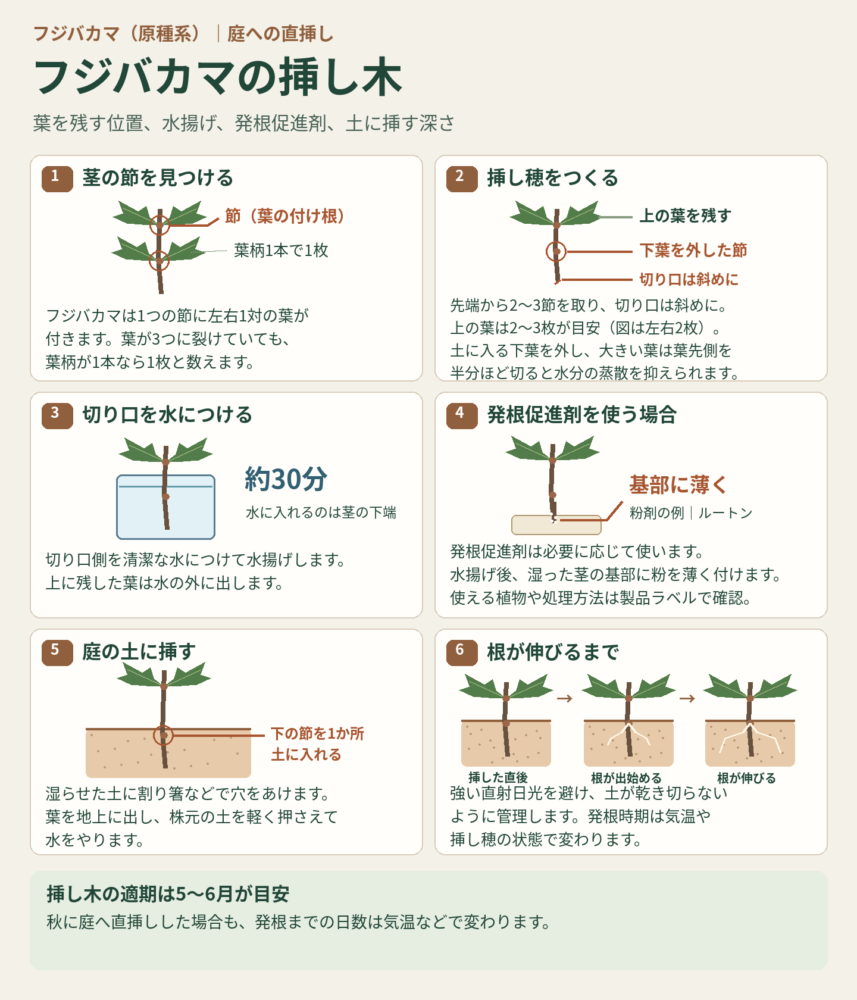

10月17日の花を振り返って
10月17日のフジバカマ（原種系）は、私が庭で見た印象では、開花が約80％まで進んでいました。まだピンク色の蕾が残る一方で、白い糸のような花が枝先のあちこちに広がり、少し離れて見ても、開いた花房がよく目に入るようになっていました。
この日はアサギマダラが2匹訪れ、私が見ていた範囲では、吸蜜の約90％がこちらのフジバカマ（原種系）でした。10月12日には、先に咲いた白フジバカマ（原種系）で吸蜜する姿を多く見ました。同じ庭でも、株によって花が開く時期が少しずれていて、蝶がよくとまる場所にも違いがあったことが印象に残っています。
こうして育てたフジバカマに蝶が来てくれると、庭でもう少し株を増やしていきたいと思います。そこで今回は、庭の土に直接挿す方法を、枝を切り取るところから、挿した後の管理まで順にまとめました。
葉の付け根を見て、残す葉と土に入る節を決める
挿し穂を作るとき、私がまず見るのは、葉が茎のどこに付いているかです。葉が付いているところが「節」です。フジバカマは同じ節の左右に葉が向かい合って付くので、横から見ると、葉が左右に出ている高さが節の目印になります。葉が三つに裂けているものも、付け根をたどって葉柄が1本なら1枚です。
元気な茎の先端から、節が2〜3か所付いた部分を切り取ります。上に残す葉は2〜3枚が目安で、図では上の節に付いた左右1対、合わせて2枚を残しています。土に入る下の節の葉は付け根から外し、茎の下端は斜めに切ります。
残した葉が大きければ、葉先側を半分ほど切って、葉から逃げる水分を抑えます。根がまだない間は乾きやすいので、葉の枚数と大きさの両方を見ておきたいところです。茎だけになった下の節と、葉を残した上の節を見比べると、どこまで土に入れるかも分かりやすくなります。
切り口を水につけてから土へ
切った茎は、下端を清潔な水に約30分つけて水揚げします。水に入れるのは茎の下の部分で、上に残した葉は水の外に出しておきます。
発根促進剤を使う場合は、水揚げのあと、挿す直前に使います。図に載せた粉剤「ルートン」の例では、湿った茎の基部に粉を薄く付けます。使える植物や処理方法は製品の表示を確認します。発根促進剤は、挿し穂を作るときに必要に応じて使うものです。
土に入れるのは、下葉を外した節1か所が目安
庭へ直挿しするときは、あらかじめ土を湿らせ、割り箸などで穴をあけておきます。穴を作ってから茎を入れると、切り口を土に押し付けずに挿せます。深さの目安は、下葉を外した節が1か所、土の中に入り、残した葉が地上に出る位置です。挿したあと、茎の周りの土を軽く押さえて水をやります。
同じくらいの長さに切った茎でも、節と節の間隔が違えば、同じ深さまで挿したときに節の位置が変わります。私なら、茎を何センチ埋めるかを先に決めるよりも、葉を外した節と土の表面の位置を見て深さを合わせます。

秋の直挿しでは、地上に残した葉の変化を見ていきたい
挿したあとは、強い直射日光を避け、土が乾き切らないようにします。図には「挿した直後」「根が出始める」「根が伸びる」の順で描きました。フジバカマの挿し木は5〜6月が適期の目安です。秋に庭へ直挿しした場合、根が出るまでの時間は、その後の気温や挿し穂の状態でも変わると思います。
地上から見える葉がしばらく緑のままでも、土の中で根がどこまで伸びたかは、葉の色だけでは分かりません。秋に見ていくなら、残した葉の張りや色がどう変わるか、節の近くに新しい動きが出るかを、日にちを追って見ていきたいです。
10月17日は、育ててきた株がアサギマダラの吸蜜場所になってくれた日でした。挿し木で株を増やせたら、庭のどこに植えるとよく育つか、花が開く時期にどんな違いが出るかも楽しみにしています。
10月24日から10日間にわたって、フジバカマ（原種系）の挿し穂を少しずつ庭の土に直接挿し、毎日水をあげました。秋に挿した枝がこのまま冬を越して、来年の春に新芽を出してくれるでしょうか。どのくらい根付いてくれるのか、今から春が楽しみです。